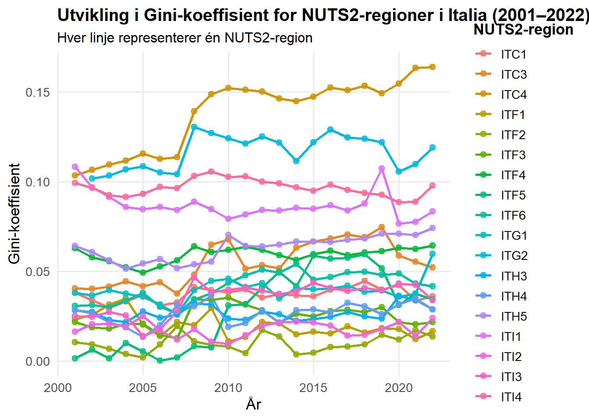
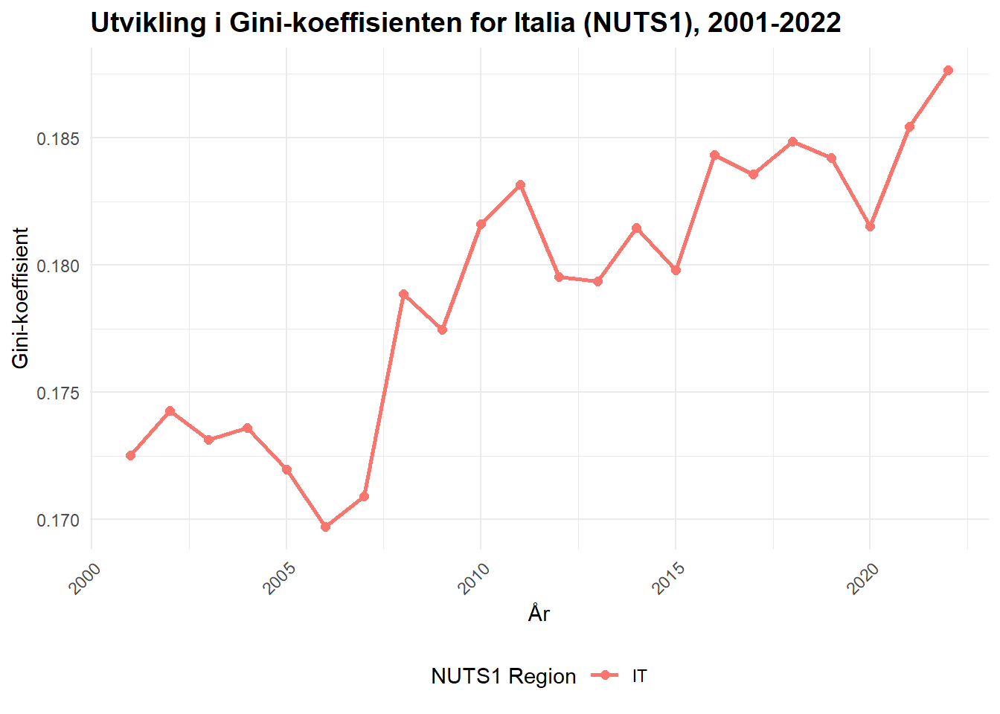
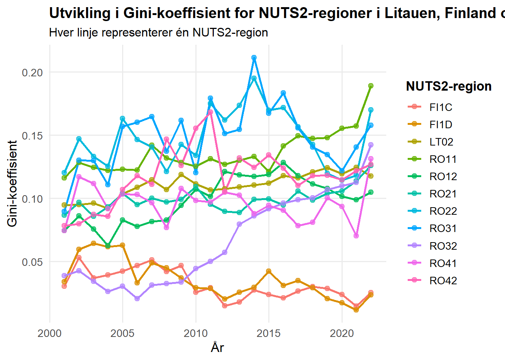

── Conflicts ────────────────────────────────────────── tidyverse_conflicts() ──
✖ dplyr::filter() masks stats::filter()
✖ dplyr::lag() masks stats::lag()
ℹ Use the conflicted package (<http://conflicted.r-lib.org/>) to force all conflicts to become errors
library(vtable)
Loading required package: kableExtra
Attaching package: 'kableExtra'
The following object is masked from 'package:dplyr':
group_rows
library(flextable)
Attaching package: 'flextable'
The following objects are masked from 'package:kableExtra':
as_image, footnote
The following object is masked from 'package:purrr':
compose
library(scales)
Attaching package: 'scales'
The following object is masked from 'package:purrr':
discard
The following object is masked from 'package:readr':
col_factor
library(tinytex)
<<<<<<< HEAD
library(readxl)library(stringr)library(janitor)
Attaching package: 'janitor'
The following objects are masked from 'package:stats':
chisq.test, fisher.test
library(tidyr)library(dineq)
Warning: package 'dineq' was built under R version 4.5.2
Sys.setlocale("LC_ALL", "Norwegian")
=======
library(readxl)
Sys.setlocale("LC_ALL", "Norwegian")
>>>>>>> MagnusBranch
Warning in Sys.setlocale("LC_ALL", "Norwegian"): using locale code page other
than 65001 ("UTF-8") may cause problems
# Henter inn populasjons datasett fra ExcelPopulasjon <-read_excel("DEMO_Ass1.xlsx", sheet =2, col_types ="text") %>%clean_names()# Henter inn regional BNP datasett fra Excell BNP <-read_excel("GDP_Ass1.xlsx", sheet =2, col_types ="text") %>%clean_names()
# Omgjør populasjon til langt format PopulasjonLang <- Populasjon %>%pivot_longer(cols =starts_with("x"),names_to ="Aar",values_to ="Innbyggere" ) %>%mutate(Aar =as.integer(str_remove(Aar, "^x")),Innbyggere =as.numeric(str_replace_all(Innbyggere, " ", "")) )
Warning: There was 1 warning in `mutate()`.
i In argument: `Innbyggere = as.numeric(str_replace_all(Innbyggere, " ", ""))`.
Caused by warning:
! NAs introduced by coercion
#Omgjør BNP til langt formatBNPLang <- BNP %>%pivot_longer(cols =starts_with("x"),names_to ="Aar",values_to ="BNP" ) %>%mutate(Aar =as.integer(str_remove(Aar, "^x")),BNP =as.numeric(str_replace_all(BNP, " ", "")) )
Warning: There was 1 warning in `mutate()`.
i In argument: `BNP = as.numeric(str_replace_all(BNP, " ", ""))`.
=======
The following objects are masked from 'package:stats':
chisq.test, fisher.test
# Les inn DEMO som characterdemo <-read_excel("DEMO_Ass1.xlsx", sheet =2, col_types ="text") %>%clean_names()# Les inn GDP som charactergdp <-read_excel("GDP_Ass1.xlsx", sheet =2, col_types ="text") %>%clean_names()
# ---- Gjør begge "long" ----demo_long <- demo %>%pivot_longer(cols =starts_with("x"),names_to ="time",values_to ="population" ) %>%mutate(time =as.integer(str_remove(time, "^x")),population =as.numeric(population) )
Warning: There was 1 warning in `mutate()`.
i In argument: `population = as.numeric(population)`.
Caused by warning:
! NAs introduced by coercion
Warning: There was 1 warning in `mutate()`.
i In argument: `gdp = as.numeric(gdp)`.
>>>>>>> MagnusBranch
Caused by warning:
! NAs introduced by coercion
<<<<<<< HEAD
Metadata BNP
Det finnes ulike hoved metoder å beregne brytto nasjonalt produkt på. Eurostat har valgt å benytte den såkalte «inntekstmetoden». Eurostat velger denne metoden ovenfor utgifts metoden grunnet mangel på data over gode overføringer mellom regioner.
Etter inntektsmetoden regnes BNP på følgende måte: Lønn som utbetales til ansatte + bedrifter sin fortjeneste + skatte og avgifter minus subsidier gitt fra staten + avskrivinger knyttet til industri.
# Beregne BNP per innbygger(BNPPI) og ganger ut BNP som er oppgitt i millioner BNPPI <- PopulasjonLang %>%left_join(BNPLang, by =join_by(region, Aar)) %>%mutate( Innbyggere =as.numeric(Innbyggere), BNP =as.numeric(BNP), BNPPI = (BNP *1e6) / Innbyggere, )
#Hvor mange observasjoner det er totalt i BNPPInrow(BNPPI)
# A tibble: 1 x 6
geo region Aar Innbyggere BNP BNPPI
<int> <int> <int> <int> <int> <int>
1 0 0 0 358 515 841
I tabbelen over har vi kombinert de to datasettene hentet fra Eurostat. Vi har da en tabell som viser BNP per inbygger i hvert av NUTS3 områdene for delt på år. I hver obersvasjon hvor det forekommer en NA verdi i populasjon og eller total BNP vil også få BNPPI som NA verdi. Datasettet består av totalt 4680 observasjoner, og 841 av dem ender opp ned NA verdi i BNPPI. For å videre kunne jobbe mer effektivt i utarbeidelsen av tabellene, lager vi et nytt datasett hvor alle observasjoner med NA verdi er fjernet.
#Fjerner alle regioner med NA verdierBNPPIRen <-na.omit(BNPPI)
I tabellen over ser vi utviklingen av gjenomsnitt, median, minste og høyeste verdi for BNP per inbygger for fra år 2000 til år 2023. Verdiene er basert på alle obervasjonene fra datasettet hvor obervasjoner med NA verdier er fjernet. Videre skal vi lage en deskreptiv analyse utifra statestikken som fremkommer av datasettet. For å enkelere visualisere dette lager vi linediagramer for sentrale mål.
#Lager et linjediagram som viser utvikling av mean og median BNPPIBNPPIRen %>%group_by(Aar) %>%summarise(Gjennomsnitt =mean(BNPPI, na.rm =TRUE),Median =median(BNPPI, na.rm =TRUE) ) %>%pivot_longer(cols =c(Gjennomsnitt, Median),names_to ="Statistikk",values_to ="BNPPI_verdi" ) %>%ggplot(aes(x = Aar, y = BNPPI_verdi, color = Statistikk)) +geom_line(size =1.2) +geom_point(size =2) +labs(title ="Utvikling i BNP per innbygger (gjennomsnitt og median)",x ="År",y ="BNP per innbygger (BNPPI)",color ="Statistikk" ) +scale_color_manual(values =c("Gjennomsnitt"="#2E86AB", "Median"="#A93226")) +theme_minimal(base_size =14) +theme(plot.title =element_text(face ="bold", hjust =0.5),panel.grid.minor =element_blank() )
Warning: Using `size` aesthetic for lines was deprecated in ggplot2 3.4.0.
i Please use `linewidth` instead.
I tabellen over ser vi utviklingen av gjenomsnitt og median verdien fra år 2000 til 2023. Begge de statistiske målene følger i stor grad samme utvikling. Det er en stor økning fra 2000 til 2001. Etter dette er det i hovedsak en jevn generel vekst fra år til år, med et par avvik. I både 2008 og 2020 ser vi reduksjon i BNPPI sammenlignet med det forekommende året. I 2023 ser vi igjen en drastisk endring, spesielt i Median hvor BNPPI reduseres fra ca 25 000 dollar til ca 15 000 dollar. Reduksjonen i år 2008 og 2020 er ikke overaskende og kan forklares med henholdsvis finanskrisen og Covid-19.
En annen faktor som kan påvirke utviklingen av BNPPI er utartingen av NA verdier i data settet vårt. Som tidligere vist er det totalt 841 obersvasjoner som ikke kommer med i denne tabellen. I hvilken år disse fremkommer og hvilken NUTS3 regioner som forsvinner fra disse årene kan forventes å ha en effekt på gjenomsnittet for det året. Dette kommer av at noen land gjenerelt sett har høyere BNP enn andre.
#Sjekke hvor mange observasjoner det er og hvor mange som inneholder NA verdier per årBNPPI %>%group_by(Aar) %>%summarise(antall_NA =sum(is.na(BNPPI)),total_obs =n() ) %>%arrange(Aar) %>%kable() %>%kable_styling(full_width =FALSE, position ="left")
Aar
antall_NA
total_obs
2000
140
195
2001
31
195
2002
26
195
2003
26
195
2004
26
195
2005
26
195
2006
26
195
2007
26
195
2008
26
195
2009
26
195
2010
26
195
2011
26
195
2012
26
195
2013
26
195
2014
26
195
2015
26
195
2016
26
195
2017
26
195
2018
26
195
2019
26
195
2020
26
195
2021
26
195
2022
26
195
2023
124
195
I denne tabellen set vi at i BNPPI datasettet er det 140 observasjoner fra 2000 og 124 fra 2023 som har NA verdier. Dette skiller seg ut fra årene i mellom hvor det jevnt gjennom er 26 observasjoner med NA verdi. Totalt er det 195 obervasjoner hvert år. En teori som kan forklare at median og gjenomsnittsveridene er veldig lave i forhold er at NUTS3 regioner med NA verdier i disse årstallene i hovedsak stammer fra land med relativt høyest BNPPI.
Part B: Regional ulikhet
Oppsumering av artikkel
Ginis koeffisient
I 2017 publiserte Christian Lessmann og Andre Seidel en artikkel hvor de ser på hvor godt egnet «lysdata» er til å estimere regional inntekt. Sentrale spørsmål som tas opp i artikkelen er hvordan regionale økonomiske ulikheter utvikler seg over tid, og hvilke faktorer som fører til endringer i regional ulikhet.
I en 2012 artikkel som Lessmann og Seidel er inspirert av presenteres ideen om at «lysdata» er en indikasjon på hvor økonomisk utviklet et land er. Tankegangen er at aktiviteter som koster penger å gjennomføre på kvelden som regel trenger lys, og jo rikere et land/ region er jo flere har råd til å delta på slike aktiviteter. Ved å analysere satellitt bilder på nattestid kan mengden lys være en indikator på velstanden i området.
Nytteverdien fra denne vinklingen kommer av at det er stor variasjon på hvor dokumentert regionale ulikheter er fra land til land. Artikkelen påpeker at tidligere studier på området fokuserer på vel- utviklede nasjoner, da det ikke finnes tilgjengelige gode nok data for mindre utviklete land på regionalt nivå. Dersom det kan bevises at dette konseptet holder vann får forskere enn ny måte å analysere mindre velstående land sin regionale ulikhet.
For å undersøke hvor valid teorien er, analyserer artikkelen først velstående land hvor det allerede finnes godt dekkende data over regionale ulikheter. Ved å analysere bilder fra NASA satellitter og rangere regioner fra 1992 og utover, skaper de estimater over hvor mye økonomisk utvikling regioner har hatt i perioden.
I studien brukes Gini-koeffisient. Dette er et mål som måler hvor skjevt ressurser i en befolkning fordeles, for eksempel mellom regioner. Gini-koeffisient har en skala fra 0 til 1. En 0-verdi betyr at alt er likt fordelt, og 1 betyr at alle ressursene ligger hos en eller et veldig få antall personer. I studien beregnes og måles koeffisienten i regioner over tid, som viser om det er divergens eller konvergens. Dersom koeffisient øker over tid vil det si at forskjellene mellom de rike og fattige øker over tid, og det er divergens. Hvis koeffisienten reduseres over tid reduseres forskjellen mellom rik og fattige, dvs konvergens.
Ved å sammenligne estimatene med faktiske BNP data kommer det frem at teorien i stor grad stemmer overens i middels rike og rike land, mens i fattigere land man har data på er konseptet dårlig egnet.
Beregne Gini-koeffisient på vårt datasett
Videre i oppgaven skal vi beregne Gini-koeffisienten på NUTS2 nivå for landene Italia, Finland, Romania og Litauen. Første steg er å transformere BNNPPIRen datasettet våres for NUTS3 regioner til en oversikt over NUTS2 regioner. Hver NUTS3 region har en tilhørende “geo” kode. Disse består av 5 tegn, for eksempel ITC31 for Imperia. De fire første sympolene er det samme som NUTS 2 geo koden. Ved å samle alle obervasjoner hvor de firste første sympolene er like kan vi lage en datasett fordelt på NUTS 2 regioner.
#Definerer et nytt datasett hvor NUTS3 regionene delles inn i NUTS2 regionerNUTS2 <- BNPPIRen %>%mutate(NUTS2 =substr(geo, 1, 4), Aar =as.numeric(Aar) )
#For å kunne beregne GINI koefisienten av alle inkluderte observasjoner fjernes alle NUTS2 regioner som bare inneholder en NUTS3 reigion. Gini_NUTS2_Aar <- NUTS2 %>%group_by(NUTS2, Aar) %>%filter(n() >=2) %>%summarise(Gini =calc_gini_for_group(cur_data()),Mean_BNPPI =weighted.mean(BNPPI, Innbyggere),Total_Pop =sum(Innbyggere),n_NUTS3 =n(),.groups ="drop" )
Warning: There was 1 warning in `summarise()`.
i In argument: `Gini = calc_gini_for_group(cur_data())`.
i In group 1: `NUTS2 = "FI19"` `Aar = 2023`.
Caused by warning:
! `cur_data()` was deprecated in dplyr 1.1.0.
i Please use `pick()` instead.
# Antall unike NUTS2-regionerlength(unique(Gini_NUTS2_Aar$NUTS2))
[1] 30
# Legg til NUTS1 (landkode)NUTS2_antall <- Gini_NUTS2_Aar %>%mutate(NUTS1 =substr(NUTS2, 1, 2)) %>%# Hent landkode fra NUTS2distinct(NUTS1, NUTS2) %>%# Sørg for at hver NUTS2 bare telles én ganggroup_by(NUTS1) %>%# Grupper etter landsummarise(Antall_NUTS2 =n()) # Tell antall NUTS2 per NUTS1# Se resultatetNUTS2_antall
# A tibble: 4 x 2
NUTS1 Antall_NUTS2
<chr> <int>
1 FI 3
2 IT 18
3 LT 1
4 RO 8
Her er det laget en oversikt over alle NUTS2 regioner og den tilhørende beregnede GINI verdien. GINI verdien beskriver hvor jevn fordelt BNPPI er fordelt mellom NUTS3 regionene som havner i samme NUTS2 region. I datasettet er det tilsammen 30 NUTS2 regioner, men hvilken land disse faller innenfor er ganske skjevfordelt. Det er 18 NUTS2 regioner fra Italia, mens Lithauen har bare 1. Finland og Romania har henholdsvis 3 og 8 NUTS2 regioner. Dette stammer av at større land som regel har flere NUTS2 regioner enn mindre land.
ggplot(Gini_over_time, aes(x = Aar, y = Weighted_Gini)) +geom_line(color ="blue", size =1) +geom_point(color ="darkblue", size =2) +labs(title ="Utvikling av Gini-koeffisienten over tid (veid gjennomsnitt per år)",x ="År",y ="Gini-koeffisient" ) +theme_minimal() +theme(plot.title =element_text(hjust =0.5, size =14, face ="bold"),axis.title =element_text(size =12) )
I tabellen over vises den generelle utviklingen av GINI koefiseienten. Slik som i bergegningene av BNPPI får årstall 2000 og 2023 sterkt fravikende resultater grunnet manglende data. Får å enkelere kunne analysere Gini koefisentens betydning vil det videre brukes et datasett som følger tidslinjen 2001-2022.
# Filtrer til kun år 2001–2022 og legg til NUTS1 (landkode)Gini_NUTS2_Aar_filtered <- Gini_NUTS2_Aar %>%filter(Aar >=2001& Aar <=2022) %>%mutate(NUTS1 =substr(NUTS2, 1, 2)) # Henter de to første bokstavene (landkode)# Lag linjediagramggplot(Gini_NUTS2_Aar_filtered, aes(x = Aar, y = Gini, group = NUTS2, color = NUTS1)) +geom_line(size =1, alpha =0.8) +labs(title ="Utvikling i Gini-koeffisient for NUTS2-regioner (2001–2022)",subtitle ="Farge viser hvilket land (NUTS1) regionen tilhører",x ="År",y ="Gini-koeffisient",color ="Land (NUTS1)" ) +theme_minimal(base_size =13) +theme(legend.position ="top",panel.grid.minor =element_blank(),plot.title =element_text(face ="bold", size =15),plot.subtitle =element_text(size =12) )
I dette linjegrammet vises GINI koefisienten sin utvikling i perioden 2001-2022. Fargen på linjene indikerer hvilken NUTS1 region NUTS2 regionene tilhører. Tabellen blir noe uoversiktelig da det er 30 observasjoner. For å gi et bedre analyse grunnlag splittes disse videre opp i to tabeller, en for NUTS2 regioner i Italia og en for de resterende landene.
# Filtrer til kun Italia (NUTS1 = "IT")Gini_Italia <- Gini_NUTS2_Aar %>%mutate(NUTS1 =substr(NUTS2, 1, 2)) %>%filter(NUTS1 =="IT", Aar >=2001, Aar <=2022)# Lag linjediagram for italienske NUTS2-regionerggplot(Gini_Italia, aes(x = Aar, y = Gini, color = NUTS2, group = NUTS2)) +geom_line(size =1) +geom_point(size =2, alpha =0.8) +labs(title ="Utvikling i Gini-koeffisient for NUTS2-regioner i Italia (2001–2022)",subtitle ="Hver linje representerer én NUTS2-region",x ="År",y ="Gini-koeffisient",color ="NUTS2-region" ) +theme_minimal(base_size =13) +theme(legend.position ="right",legend.title =element_text(face ="bold"),plot.title =element_text(face ="bold", size =15),plot.subtitle =element_text(size =12),panel.grid.minor =element_blank() )

#Filtrer til Italia og år 2001-2022Gini_Italia <- Gini_NUTS2_Aar %>%mutate(NUTS1 =substr(NUTS2, 1, 2)) %>%filter(NUTS1 =="IT", Aar >=2001, Aar <=2022)# Beregn gjennomsnittlig Gini-koeffisient per årAvg_Gini_Italia_per_aar <- Gini_Italia %>%group_by(Aar) %>%summarise(Mean_Gini =mean(Gini, na.rm =TRUE),.groups ="drop" )# Lag linjediagram av gjennomsnittlig Gini-koeffisientggplot(Avg_Gini_Italia_per_aar, aes(x = Aar, y = Mean_Gini)) +geom_line(color ="blue", size =1) +geom_point(color ="darkblue", size =2) +labs(title ="Gjennomsnittlig Gini-koeffisient i Italia (NUTS2) per år",x ="År",y ="Gjennomsnittlig Gini-koeffisient" ) +theme_minimal(base_size =13) +theme(plot.title =element_text(face ="bold", size =15),panel.grid.minor =element_blank() )
I tabellen over ser vi GINI koefisienten for alle NUTS2 regionene i vårt datasett som tilhører Italia. Koefisienten ligger i mellom 0,02 og 0,10 for majoriteten av regionene gjennom hele årrekken. Dette indikerer at i hver enkelt NUTS2 region er det en jevn fordeling av BNPPI i de tilhørende NUTS3 regionene. Regionene ITC 4 og ITG2 skiller seg ut her da de gjennom hele rekken har en koefisient mellom 0,10 og 0,17. Dette tyder på at i disse regionene er det en større skjevfordeling av BNPPI enn i resten av landet. I en gjenomsnittberegning av den gjennomsnittelige Koefiseienten per år ligger den på rundt 0,05
# Filtrer for Italia (NUTS1 starter med "IT")Italia_NUTS2 <- NUTS2 %>%filter(substr(NUTS2, 1, 2) =="IT")# Funksjon for å beregne Gini med vekt (Innbyggere)calc_gini_for_group <-function(df) {if(nrow(df) <2) return(NA_real_) # Hvis for få observasjonergini.wtd(df$BNPPI, weights = df$Innbyggere)}# Beregn Gini på NUTS1-nivå per årGini_NUTS1_Italia <- Italia_NUTS2 %>%mutate(NUTS1 =substr(NUTS2, 1, 2)) %>%# Legg til NUTS1-kode (IT)group_by(NUTS1, Aar) %>%summarise(Gini =calc_gini_for_group(cur_data()),Total_Pop =sum(Innbyggere, na.rm =TRUE),.groups ="drop" )print(Gini_NUTS1_Italia)
# A tibble: 23 x 4
NUTS1 Aar Gini Total_Pop
<chr> <dbl> <dbl> <dbl>
1 IT 2000 0.0171 1047919
2 IT 2001 0.173 55325897
3 IT 2002 0.174 56993270
4 IT 2003 0.173 57186378
5 IT 2004 0.174 57611990
6 IT 2005 0.172 58044368
7 IT 2006 0.170 58288996
8 IT 2007 0.171 58510725
9 IT 2008 0.179 59001769
10 IT 2009 0.177 59420592
# i 13 more rows
Gini_NUTS1_Italia_filtered <- Gini_NUTS1_Italia %>%filter(Aar >=2001, Aar <=2022)ggplot(Gini_NUTS1_Italia_filtered, aes(x = Aar, y = Gini, group = NUTS1, color = NUTS1)) +geom_line(size =1) +geom_point(size =2) +labs(title ="Utvikling i Gini-koeffisienten for Italia (NUTS1), 2001-2022",x ="År",y ="Gini-koeffisient",color ="NUTS1 Region" ) +theme_minimal() +theme(legend.position ="bottom",plot.title =element_text(face ="bold", size =14),axis.text.x =element_text(angle =45, hjust =1) )

Her er det laget et linediagram som viser utviklingen av GINI koefisient på NUTS1 region basert på fordelingen av BNPPI i NUTS2 regionene. Dette tallet sier noe om fordelingen av BNPPI mellom NUTS2 regioner sett opp mot hele landet. Koefisienten ligger mellom 0,17 og 0,19. Dette indikerer at det i Italia er en større skjevfordeling mellom NUTS2 regionene, enn det er i NUTS 3 regionene satt opp mot regioner i samme NUT2.
# Filtrer NUTS2-regioner for Litauen (LT), Finland (FI) og Romania (RO) mellom 2001-2022Gini_selected_countries <- Gini_NUTS2_Aar %>%mutate(NUTS1 =substr(NUTS2, 1, 2)) %>%filter(NUTS1 %in%c("LT", "FI", "RO"), Aar >=2001, Aar <=2022)# Lag linjediagram med NUTS2-regioner som separate linjer, farget etter regionggplot(Gini_selected_countries, aes(x = Aar, y = Gini, group = NUTS2, color = NUTS2)) +geom_line(size =1) +geom_point(size =2, alpha =0.7) +labs(title ="Utvikling i Gini-koeffisient for NUTS2-regioner i Litauen, Finland og Romania (2001–2022)",subtitle ="Hver linje representerer én NUTS2-region",x ="År",y ="Gini-koeffisient",color ="NUTS2-region" ) +theme_minimal(base_size =13) +theme(legend.position ="right",legend.title =element_text(face ="bold"),plot.title =element_text(face ="bold", size =15),plot.subtitle =element_text(size =12),panel.grid.minor =element_blank() )

=======
# Beregne GDP per innbygger combined <- demo_long %>%left_join(gdp_long, by =join_by(region, time)) %>%mutate(gdp_per_capita = gdp / population*1000000)
Kort gjennomgang av datasett og variabler
>>>>>>> MagnusBranch
=======
}, function(instance) {
});
}
let selectedAnnoteEl;
const selectorForAnnotation = ( cell, annotation) => {
let cellAttr = 'data-code-cell="' + cell + '"';
let lineAttr = 'data-code-annotation="' + annotation + '"';
const selector = 'span[' + cellAttr + '][' + lineAttr + ']';
return selector;
}
const selectCodeLines = (annoteEl) => {
const doc = window.document;
const targetCell = annoteEl.getAttribute("data-target-cell");
const targetAnnotation = annoteEl.getAttribute("data-target-annotation");
const annoteSpan = window.document.querySelector(selectorForAnnotation(targetCell, targetAnnotation));
const lines = annoteSpan.getAttribute("data-code-lines").split(",");
const lineIds = lines.map((line) => {
return targetCell + "-" + line;
})
let top = null;
let height = null;
let parent = null;
if (lineIds.length > 0) {
//compute the position of the single el (top and bottom and make a div)
const el = window.document.getElementById(lineIds[0]);
top = el.offsetTop;
height = el.offsetHeight;
parent = el.parentElement.parentElement;
if (lineIds.length > 1) {
const lastEl = window.document.getElementById(lineIds[lineIds.length - 1]);
const bottom = lastEl.offsetTop + lastEl.offsetHeight;
height = bottom - top;
}
if (top !== null && height !== null && parent !== null) {
// cook up a div (if necessary) and position it
let div = window.document.getElementById("code-annotation-line-highlight");
if (div === null) {
div = window.document.createElement("div");
div.setAttribute("id", "code-annotation-line-highlight");
div.style.position = 'absolute';
parent.appendChild(div);
}
div.style.top = top - 2 + "px";
div.style.height = height + 4 + "px";
div.style.left = 0;
let gutterDiv = window.document.getElementById("code-annotation-line-highlight-gutter");
if (gutterDiv === null) {
gutterDiv = window.document.createElement("div");
gutterDiv.setAttribute("id", "code-annotation-line-highlight-gutter");
gutterDiv.style.position = 'absolute';
const codeCell = window.document.getElementById(targetCell);
const gutter = codeCell.querySelector('.code-annotation-gutter');
gutter.appendChild(gutterDiv);
}
gutterDiv.style.top = top - 2 + "px";
gutterDiv.style.height = height + 4 + "px";
}
selectedAnnoteEl = annoteEl;
}
};
const unselectCodeLines = () => {
const elementsIds = ["code-annotation-line-highlight", "code-annotation-line-highlight-gutter"];
elementsIds.forEach((elId) => {
const div = window.document.getElementById(elId);
if (div) {
div.remove();
}
});
selectedAnnoteEl = undefined;
};
// Handle positioning of the toggle
window.addEventListener(
"resize",
throttle(() => {
elRect = undefined;
if (selectedAnnoteEl) {
selectCodeLines(selectedAnnoteEl);
}
}, 10)
);
function throttle(fn, ms) {
let throttle = false;
let timer;
return (...args) => {
if(!throttle) { // first call gets through
fn.apply(this, args);
throttle = true;
} else { // all the others get throttled
if(timer) clearTimeout(timer); // cancel #2
timer = setTimeout(() => {
fn.apply(this, args);
timer = throttle = false;
}, ms);
}
};
}
// Attach click handler to the DT
const annoteDls = window.document.querySelectorAll('dt[data-target-cell]');
for (const annoteDlNode of annoteDls) {
annoteDlNode.addEventListener('click', (event) => {
const clickedEl = event.target;
if (clickedEl !== selectedAnnoteEl) {
unselectCodeLines();
const activeEl = window.document.querySelector('dt[data-target-cell].code-annotation-active');
if (activeEl) {
activeEl.classList.remove('code-annotation-active');
}
selectCodeLines(clickedEl);
clickedEl.classList.add('code-annotation-active');
} else {
// Unselect the line
unselectCodeLines();
clickedEl.classList.remove('code-annotation-active');
}
});
}
const findCites = (el) => {
const parentEl = el.parentElement;
if (parentEl) {
const cites = parentEl.dataset.cites;
if (cites) {
return {
el,
cites: cites.split(' ')
};
} else {
return findCites(el.parentElement)
}
} else {
return undefined;
}
};
var bibliorefs = window.document.querySelectorAll('a[role="doc-biblioref"]');
for (var i=0; i
>>>>>>> MagnusBranch